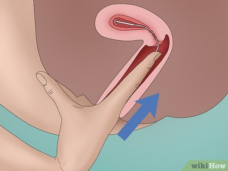

MIRENA COUNSELLING
What is Mirena
- Mirena is an IUD which has progesterone.
- It is still a progesterone-only method.
Progesterone-only methods
- Progesterone-releasing implant
- Progesterone-releasing IUD (Mirena)
- Progesterone-only pills
- Progesterone-only injections (Depo)
- Contraindications of all progesterone methods are the same.
- Side effects and risks are the same.
- Mirena is challenging because it is an intrauterine device and has extra contraindications compared to POP pills or progesterone injections.
Context
- No cases on implant or depo injections.
- Famous OSCE contraceptions since 2017–18: COCPs, Mirena, and HRT/MHT.
How Mirena Works
- Thickens the cervical mucus
- Changes the endometrial structure → endometrial atrophy
- Prevents implantation
- Prevents implantation
- In some ladies, prevents ovulation (not the main function)
Types of IUDs
- Copper IUD
- Progesterone-releasing IUD
- Copper IUD not commonly used unless the lady has significant contraindications to hormonal contraception and does not want condoms.
Contraindications
IUD Contraindications
- current pelvic inflammatory disease (PID)
- symptomatic chlamydia, and symptomatic or asymptomatic gonorrhoea or Mycoplasma genitalium infection
- unexplained vaginal bleeding (suspicious for a serious condition) before investigation for the cause
- Gestational trophoblastic disease with persistently elevated human chorionic gonadotrophin (hCG) serum concentrations or malignant disease
- cervical cancer awaiting treatment
- endometrial cancer (although the 52 mg LNG-IUD is sometimes used as a treatment in a specialist setting)
Two categories: infections + cancers
- Unexplained bleeding falls under cancers category.
Progesterone (hormonal) Contraindications
- History of breast cancer
- Liver disease, liver masses
- Cardiovascular disease: MI, heart attack, stroke
Advantages
- Extremely effective
- Preferred over Implanon (Implanon often causes irregular spotting → removal)
- Choice treatment for menorrhagia
- Works well for dysmenorrhea and endometriosis
- No need to remember pills or worry about vomiting pills
- Once inserted, nothing to do except ensure it stays in
Disadvantages
Minor side effects
- Regular progesterone side effects: mood changes, breast tenderness, weight gain
- Slight uptick in benign ovarian cysts (not important)
Major complications
- Vaginal discharge
- Perforation
- Expulsion
- Malposition
- Increased risk of PID
- Getting chlamydia while an IUD is inside increases severity of infection
- Getting chlamydia while an IUD is inside increases severity of infection
PID rule
- For chlamydia → leave IUD in
- For PID → start treatment; if symptoms not better in 48–72 hrs → remove IUD
Before Putting in a Mirena
- Exclude pregnancy
- Disaster if inserted when pregnant
- Many GPs ask patient to come during period (day 1–5)
- Or do a serum β-hCG
- Disaster if inserted when pregnant
- Assess STI risk
- Screen for chlamydia and gonorrhea
- Recommended for all <30 years
- Also >30 years with STI risk
- Take sexual history
- Screen for chlamydia and gonorrhea
- No antibiotic prophylaxis indicated
When to Insert
- Usually day 1–5 of cycle
- Can be inserted immediately after delivery
When it Starts Working
- 7 days
- Use condoms for first 7 days
Post-Insertion Instructions
- Nothing goes inside for 48 hours
- No intercourse, tampons, menstrual cups, swimming, baths
- No intercourse, tampons, menstrual cups, swimming, baths
- Check threads regularly
- Put a finger gently inside and feel the threads
- Threads do not interfere with sex or cause pain
- Threads help confirm correct position
- Put a finger gently inside and feel the threads

- Seek medical attention for complications
- Abnormal vaginal bleeding
- Abdominal pain
- Unusual discharge
- Cannot feel threads
- Abnormal vaginal bleeding
- Follow-up
- Review at 3–6 weeks (highest risk of perforation/expulsion)
- Ultrasound not routinely done
- Only if difficult or concerning insertion
- Review at 3–6 weeks (highest risk of perforation/expulsion)
If Threads Are Missing
- Use a cytobrush to explore lower cervical canal
- If still absent or shorter:
- Pregnancy test first
- Ultrasound
- If ultrasound does not see IUD → abdominal X-ray
- Used to detect perforation or translocation
- Sequence: Ultrasound first → X-ray second
- Pregnancy test first
Altered Bleeding Patterns
- Both copper and Mirena can cause irregular light bleeding for first 3–6 months
- As long as pregnancy, STIs, and gynae pathologies are ruled out → reassure or treat
If problematic bleeding in first 3 months
- 3-month course of combined hormonal contraception
- OR 5-day course of NSAIDs for bleeding episodes
If bleeding continues beyond 6 months
- Rule out differentials for menorrhagia
Summary
What is Mirena
- Progesterone-releasing intrauterine device
How it works
- Thickens cervical mucus
- Changes inner lining of womb (atrophy)
- Sometimes stops release of egg cells (not main)
Contraindications
- IUD: PID, active STI, cervical cancer awaiting treatment, endometrial cancer, unexplained bleeding
- Hormonal: Breast cancer, liver disease/mass, cardiovascular disease
Risks
- Minor: hormonal side effects, irregular bleeding first 3–6 months
- Major: infections, perforation, falling out, malposition
Before insertion
- Rule out pregnancy
- Rule out STIs
After insertion
- Nothing goes inside for 48 hours
- Takes 7 days to work. Use condoms
- I need u to Check threads regularly. Put the finger inside the vagina and feel the thread gently.
- I can Follow u up in 3–6 weeks
- Return for abnormal bleeding, abdominal pain, unusual discharge, or not feeling threads (red flags)
Your next patient is a 42 year old lady who is on Contraception pills and wants to change to MIRENA.
Task:
- Take history from the patient
- (Physical examination will appear on the screen)
- Counsel the patient for a MIRENA
HISTORY TAKING
1. Open-Ended Question
- “How can I help you today?”
- Patient: wants to talk about Mirena, preferably get it done today.
- Ask: “How much do you know about a Mirena?”
- Ask: “Why do you want to change?” / “What is your problem with the pills?” (forgetting, nausea, tired of taking pills).
2. Five-Piece History (5P)
(Still premenopausal)
A. Period History
Include all standard questions:
- LMP – rule out pregnancy
- Regular/irregular periods
- Heavy bleeding or excessive period pain
- Pain or bleeding between periods
- One period-related contraindication emphasized: Unexplained vaginal bleeding
B. Partner/Sexual History
- Are you sexually active?
- Dyspareunia?
- Post-coital bleeding?
- STI considerations as contraindication for IUD.
- Are you in a stable relationship?
- Ever had multiple partners?
- Do you practice safe sex and use condoms?
- History of STIs?
Add key question:
- Vaginal discharge?
- Abdominal pain (PID)?
- Any fever?
Purpose:
- Rule out present PID / present STI symptoms
- Assess STI risk factors
C. Pills History
- Why do you want to change?
- Any side effects or problems with pills?
D. Pregnancy & Surgical History
- How many pregnancies?
- Any surgeries down below?
- Any history of caesarean section?
- Reason: increased risk of perforation in those with uterine scars / fibroid surgery.
- Reason: increased risk of perforation in those with uterine scars / fibroid surgery.
E. Cervical Screening
- Have you done your cervical screening test?
- Cervical cancer is a possible contraindication.
- Cervical cancer is a possible contraindication.
3. Additional Medical History
- Any past history of liver disease or liver masses/lumps?
- Any history of heart disease / heart attack / stroke?
- Any cancers: breast, endometrial, cervical?
4. Medications and PMH
- Look for possible contraindications.
5. Allergies (Important Point)
- Ask about allergies.
- If patient says sulfur allergy, ask the key follow-up question:
- “How did you find out?”
- Look for:
- What reaction u had?
- Did it happen Immediate or after some time?
- What reaction u had?
- “How did you find out?”
PHYSICAL EXAMINATION
- Initial BMI (for later comparison)
- Blood pressure
- Cardiovascular exam
- Abdominal exam (liver)
- Pelvic exam is important and necessary for IUD insertion
- Consider urinary pregnancy test if concerned
COUNSELLING
1. What is Mirena?
- Mirena is an intrauterine device.
- A small T-shaped device releasing some hormones called progesterone / levonorgestrel.
2. How it Works
- Changes the inner lining of the womb, making it unsuitable for pregnancy.
- Thickens secretion in the mouth of the womb, preventing sperm from entering the womb.
RISKS
Minor Side Effects
- Headache
- Mood swings/mood changes
- Weight gain
- Breast tenderness
- Irregular bleeding/spotting for first 3 months
Major/SIGNIFICANT Risks
- Increased risk of pelvic inflammatory disease (infection in the womb)
- Rare: Perforation of the uterus
- Rare: moves to unusual places
- Rare: falls out/drops out (expulsion)
BEFORE INSERTING
- Make sure you’re not pregnant
- Make sure there is no present STI or infection
- Usually inserted day 1–5 after your period / cycle
PROCEDURE EXPLANATION
- Similar to a Pap smear / cervical screening
- Speculum insertion
- Not going to be painful
After insertion — 48 hours:
- No sex/intercourse
- No tampons
- No swimming or bathtubs (infection risk)
FOLLOW-UP
- 3–6 weeks: follow-up, chat, examine, ensure position is correct
- Ultrasound: may be done if insertion difficult or not normal
- Check the threads yourself regularly
RED FLAGS (Return Immediately)
- Unusual vaginal discharge (yellowish, foul-smelling)
- Sudden abdominal pain
- Abnormal vaginal bleeding
SULFUR ISSUE
- No guideline mentions sulfur allergy as a contraindication.
- Mirena may contain a small amount of sulfur.
- Not listed in any contraindication list → not a contraindication.
Diplomatic explanation to patient:
- Mirena may contain a small amount of sulfur which is why some people have allergy to the mirena.
- Small chance you may be allergic.
- If you develop:
- rash
- itchiness
- difficulty breathing
- any unusual problem
→ come back; we will remove it.
- rash
- If patient reports mild rash-type sulfur allergy → still proceed.
- If symptoms develop, return and it will be removed; not a big fuss.